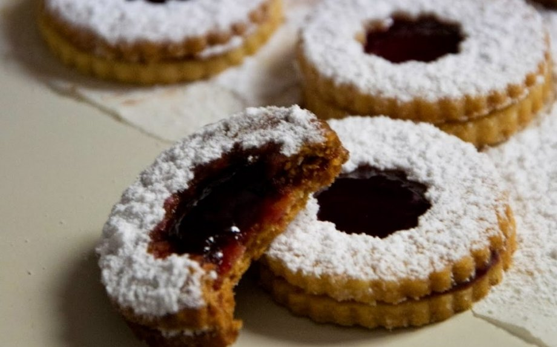
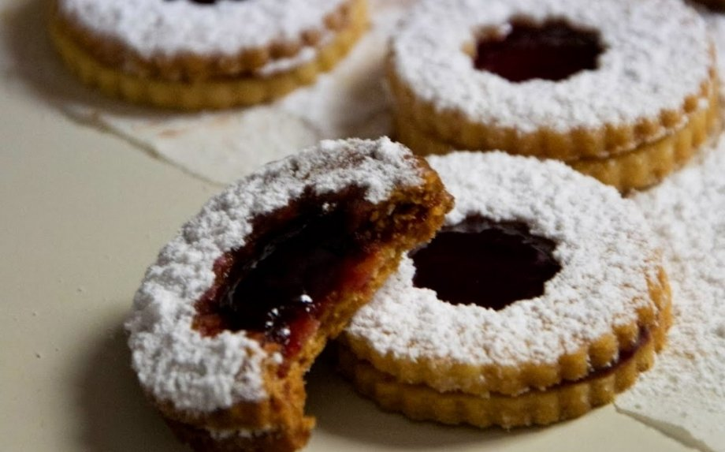

- Iš pradžių minkštą sviestą išplakame su cukraus pudra iki purios masės. Paskui sudedame kiaušinių trynius bei gerai išmaišome. Įberiame žiupsnelį druskos, nutarkuotą citrinos žievelę bei miltus sumaišytus su migdolais. Viską gerai suminkome. Padaliname masę į dvi dalis, suvyniojame į maistinę plėvelę bei atšaldome maždaug 60 minučių.
- Orkaitę įkaitiname iki 180 laipsnių temperatūros.
- Tuomet iškočiojame tešlą (iki 4 milimetrų storio) bei sausainių formelėmis išpjauname sausainius. Pusę sausainių naudosime kaip pagrindą, o kita pusę kaip sausainių viršų. Dėl šios priežasties pusėje sausainių išpjauname viduriukus.
- Tada sausainius kepame maždaug 13 minučių. Iškeptus sausainius atvėsiname.
- Jeigu džemas itin tirštas, galima jį šiek tiek pašildyti, kad būtų lengviau tepti. Ant sausainių pagrindo užtepame šiek tiek džemo, o viršutines sausainių dalis pabarstome cukraus pudra. Suklijuojame sausainius bei palaukiame mažiausiai 2 valandas, kol sustings. Kitą dieną sausainiai šiek tiek suminkštėja ir asmeniškai man tampa gardesni! Bet jeigu norisi trapių sausainių, tada skanaujame juos tą pačią dieną. Pasilepinam!
|
 
